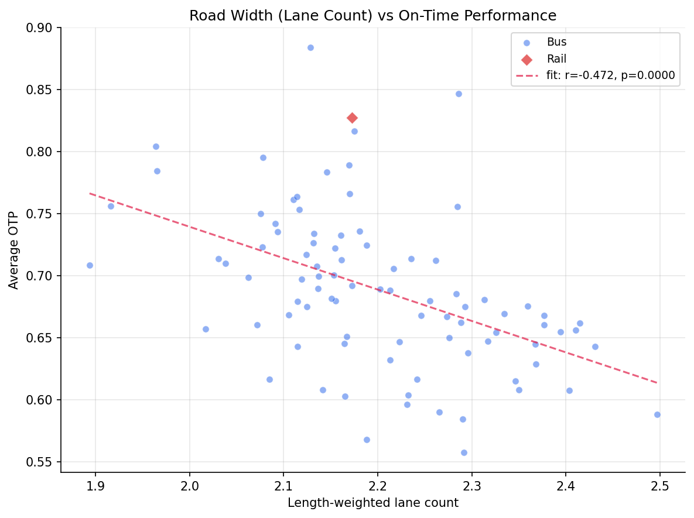
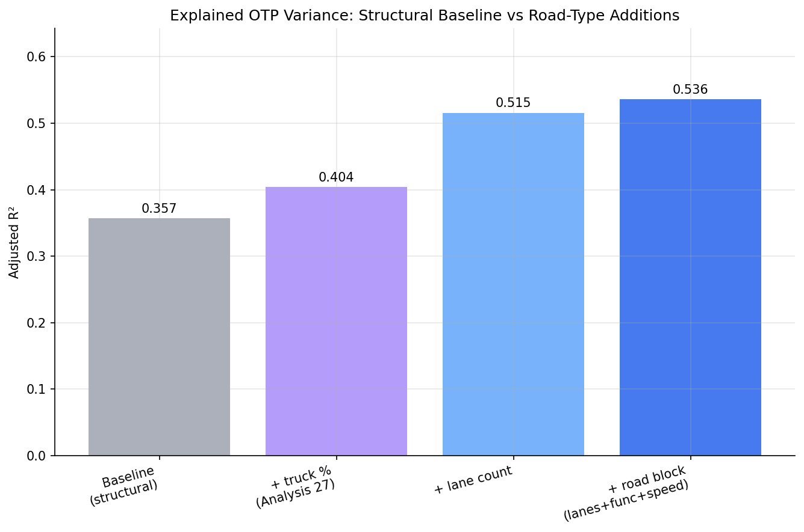
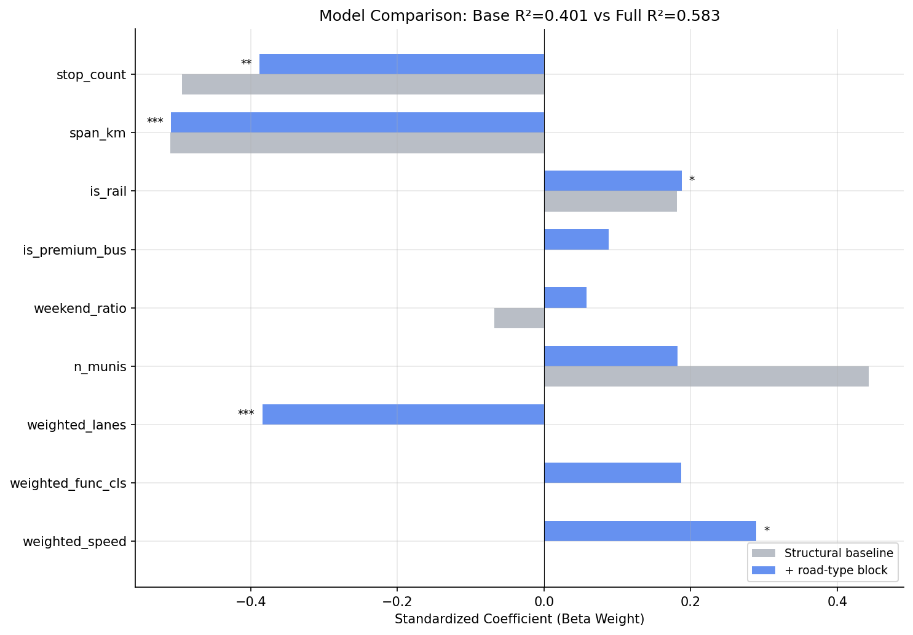
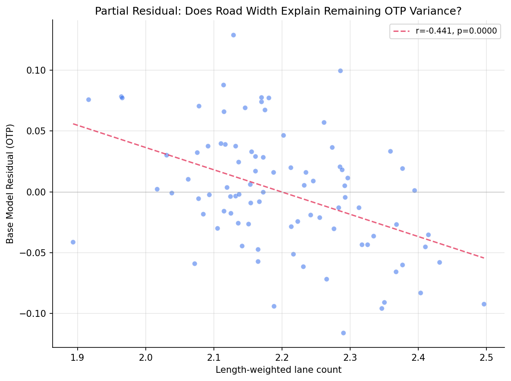

Analysis
55 - Road Classification and OTP
Ridership and External Factors
Coverage: 2019-01 to 2025-11 (from otp_monthly).
Built 2026-06-15 11:52 UTC · Commit e5cf673
Page Navigation
Analysis Navigation
Data Provenance
flowchart LR
55_road_classification_otp(["55 - Road Classification and OTP"])
t_otp_monthly[("otp_monthly")] --> 55_road_classification_otp
01_data_ingestion[["Data Ingestion"]] --> t_otp_monthly
u1_01_data_ingestion[/"data/routes_by_month.csv"/] --> 01_data_ingestion
u2_01_data_ingestion[/"data/PRT_Current_Routes_Full_System_de0e48fcbed24ebc8b0d933e47b56682.csv"/] --> 01_data_ingestion
u3_01_data_ingestion[/"data/Transit_stops_(current)_by_route_e040ee029227468ebf9d217402a82fa9.csv"/] --> 01_data_ingestion
u4_01_data_ingestion[/"data/PRT_Stop_Reference_Lookup_Table.csv"/] --> 01_data_ingestion
u5_01_data_ingestion[/"data/average-ridership/12bb84ed-397e-435c-8d1b-8ce543108698.csv"/] --> 01_data_ingestion
t_route_road_class[("route_road_class")] --> 55_road_classification_otp
12_road_classification[["Road Classification Overlay ETL"]] --> t_route_road_class
u1_12_road_classification[/"data/penndot-roadclass/roadwaysegments.json"/] --> 12_road_classification
u2_12_road_classification[/"data/penndot-roadclass/roadwayadmin.json"/] --> 12_road_classification
u3_12_road_classification[/"data/GTFS/shapes.txt"/] --> 12_road_classification
u4_12_road_classification[/"data/GTFS/trips.txt"/] --> 12_road_classification
u5_12_road_classification{"PennDOT ArcGIS Roadway Segments Layer (RMSSEG)"} --> 12_road_classification
u6_12_road_classification{"PennDOT ArcGIS Roadway Admin Layer"} --> 12_road_classification
t_route_traffic[("route_traffic")] --> 55_road_classification_otp
04_traffic_overlay[["Traffic Overlay ETL"]] --> t_route_traffic
u1_04_traffic_overlay[/"data/penndot-traffic/aadt_raw.json"/] --> 04_traffic_overlay
u2_04_traffic_overlay[/"data/GTFS/shapes.txt"/] --> 04_traffic_overlay
u3_04_traffic_overlay[/"data/GTFS/trips.txt"/] --> 04_traffic_overlay
u4_04_traffic_overlay{"PennDOT ArcGIS Roadway Traffic Layer"} --> 04_traffic_overlay
t_route_stops[("route_stops")] --> 55_road_classification_otp
01_data_ingestion[["Data Ingestion"]] --> t_route_stops
t_routes[("routes")] --> 55_road_classification_otp
01_data_ingestion[["Data Ingestion"]] --> t_routes
t_stops[("stops")] --> 55_road_classification_otp
01_data_ingestion[["Data Ingestion"]] --> t_stops
d1_55_road_classification_otp(("numpy (lib)")) --> 55_road_classification_otp
d2_55_road_classification_otp(("polars (lib)")) --> 55_road_classification_otp
d3_55_road_classification_otp(("scipy (lib)")) --> 55_road_classification_otp
classDef page fill:#dbeafe,stroke:#1d4ed8,color:#1e3a8a,stroke-width:2px;
classDef table fill:#ecfeff,stroke:#0e7490,color:#164e63;
classDef dep fill:#fff7ed,stroke:#c2410c,color:#7c2d12,stroke-dasharray: 4 2;
classDef file fill:#eef2ff,stroke:#6366f1,color:#3730a3;
classDef api fill:#f0fdf4,stroke:#16a34a,color:#14532d;
classDef pipeline fill:#f5f3ff,stroke:#7c3aed,color:#4c1d95;
class 55_road_classification_otp page;
class t_otp_monthly,t_route_road_class,t_route_stops,t_route_traffic,t_routes,t_stops table;
class d1_55_road_classification_otp,d2_55_road_classification_otp,d3_55_road_classification_otp dep;
class u1_01_data_ingestion,u1_04_traffic_overlay,u1_12_road_classification,u2_01_data_ingestion,u2_04_traffic_overlay,u2_12_road_classification,u3_01_data_ingestion,u3_04_traffic_overlay,u3_12_road_classification,u4_01_data_ingestion,u4_12_road_classification,u5_01_data_ingestion file;
class u4_04_traffic_overlay,u5_12_road_classification,u6_12_road_classification api;
class 01_data_ingestion,04_traffic_overlay,12_road_classification pipeline;
Findings
Findings: Road Classification and OTP
Summary
Road type explains OTP, and lane count is the driver. Adding a road-type block (length-weighted lane count, functional class, and posted speed) to the six-feature structural baseline raises R² from 0.40 to 0.58 (adjusted R² 0.36 → 0.54; joint F = 11.6, p < 0.001). The single feature doing the work is lane count: routes that run along wider, multi-lane roads are reliably later, independent of how many stops they make or how far they travel. This succeeds where Analysis 27 found a null for traffic volume (AADT), and it more than doubles the explanatory gain that truck percentage — Analysis 27's best traffic predictor — could provide.
Key Numbers
- 89 routes analyzed (88 bus, 1 rail) after filtering
match_rate >= 0.3; all 98 routes matched, none excluded for low coverage (median match rate ~93%). - Structural baseline (6 features): R² = 0.40, Adj R² = 0.357 — reproduces Analysis 27's baseline exactly.
- + lane count alone: Adj R² = 0.515 (+0.16).
- + full road-type block: R² = 0.583, Adj R² = 0.536 (+0.18 R²); joint F = 11.6, p < 0.001.
- truck % (Analysis 27's predictor, same sample): R² = 0.451 — well below the road-type block.
- Lane count beta weight = −0.38 (p < 0.001), tied with span as the strongest predictor in the model.
- Posted speed beta = +0.29 (p = 0.021); functional class not significant (p = 0.11).
- All VIFs ≤ 3.5 (lane count VIF = 1.46). Lane count is uncorrelated with stop count (r = +0.02) and span (r = −0.08) — its contribution is genuinely independent.
- Bus-only subset: identical story (Adj R² 0.328 → 0.515, joint F = 11.6, p < 0.001).
- Lane-count range across matched routes: 1.6 – 2.5 weighted lanes.
Observations
- More lanes, later buses. The bivariate correlation between length-weighted lane count and OTP is r = −0.47 — the strongest single road-attribute correlate of OTP in the project. In the full model it survives at beta = −0.38, p < 0.001.
- Lanes and speed pull in opposite directions, and that resolves Analysis 27's sign puzzle. Holding lane count fixed, higher posted speed is associated with better OTP (beta +0.29). The coherent reading is that the problematic roads are congested multi-lane urban arterials with low effective speeds — many lanes, signalized intersections, heavy turning and cross-traffic — not high-speed highways. A wide road that also moves fast is fine; a wide road that crawls is where buses fall behind.
- This is what truck % was reaching for. Analysis 27 found truck percentage was its only significant traffic predictor and argued it proxied road type. Replacing the proxy with direct road-type measures roughly triples the gain (truck adds +0.05 R²; the road-type block adds +0.18), confirming that interpretation and superseding it.
- Independent of route geometry. Lane count's near-zero correlation with stop count and span (and its low VIF) means it is not just re-encoding "long route" or "many stops." It captures a distinct dimension: the kind of road the route operates on.
Discussion
Across Analyses 18, 26, and 27 the model-building narrative had stalled at ~40–47% of OTP variance explained by route geometry and mode, with traffic volume contributing nothing and the remainder attributed to operational factors not in the data. This analysis moves the ceiling: a single, cleanly measured road attribute — how many lanes the route runs along — lifts explained variance to ~58%.
The mechanism is intuitive once lane count and speed are separated. Pittsburgh's worst-performing corridors (e.g., routes 71B, 88, 58, the 61-series) thread multi-lane arterials through dense neighborhoods: more lanes mean more signal phases, more turning conflicts, more boarding friction at busy stops, and more exposure to incident-driven backups — all of which degrade schedule adherence even though the road has nominal capacity. The positive speed coefficient is the tell: where those wide roads actually carry traffic at speed, buses keep their schedule.
For policy this is more actionable than the AADT null. Lane count and functional class are fixed, mappable attributes of the road network, so this offers a structural screen for where transit-priority treatments (signal priority, bus lanes, queue jumps, stop consolidation on arterials) are most likely to pay off — namely the multi-lane, low-speed arterial segments, not the quiet neighborhood streets.
Caveats
- Ecological, area-level association. These are route-level relationships between the road network a route traverses and its average OTP, not claims about individual trips or stops.
- Lane count is a route-average exposure, length-weighted over PennDOT segments within 30 m of the GTFS shape. It does not distinguish where along the route the wide-road segments fall, nor time-of-day conditions.
- PennDOT state-route coverage. The RMSSEG layers cover state-administered roads; purely local streets are underrepresented (the same limitation as Analysis 27). Match rates are high (median ~93%), but segments on city-maintained streets may be missing — the Pittsburgh city centerline is a documented phase-2 extension.
- Functional class added little on its own (p = 0.11); the lane-count and speed channels carry the road-type signal, so the headline rests on those two.
- Correlation, not proven causation. Lane count plausibly proxies a bundle of co-located features (signal density, land use, congestion); the analysis shows it is a strong, independent predictor, not that adding or removing a lane would change OTP.
Validation
Data inputs
- Data source verified. All road-type columns were read from
route_road_class, built by pipeline step 12 (road_overlay.py) from the PennDOTroadwaysegmentsandroadwayadminArcGIS layers; field names were taken from the live REST schema, not from memory, and documented indata/penndot-roadclass/SOURCE.md. The query result is validated against theROUTE_ROAD_CLASSschema (validate(..., subset=True)). - Geographic/temporal scope matches. OTP is averaged over routes with 12+ months of
data; road-type metrics are matched to the same GTFS route shapes and filtered to
match_rate >= 0.3, identical to Analysis 27's inclusion rule. All road data is Allegheny County (CTY_CODE='02'). - Null/missing handling. Routes lacking a weighted lane count, functional class, speed, or any structural feature are dropped before modeling (none were, beyond the match-rate filter). Length-weighting skips segments with missing values rather than counting them as zero.
Results plausibility
- Aggregates sanity-checked. The structural baseline reproduces Analysis 27's R² of 0.40 exactly on the same sample, confirming the baseline replication is correct. Lane-count range (1.6–2.5) and speed range are physically sensible for urban arterials.
- Surprising result investigated. The large R² jump (+0.18) was checked for artifact: lane count's VIF is 1.46 and it is essentially uncorrelated with stop count (r = +0.02) and span (r = −0.08), so the gain is not collinearity-driven double-counting. The bivariate r = −0.47 is consistent with the multivariate beta.
- Direction of effects checked. Known structural relationships retain expected signs (more stops → lower OTP; longer span → lower OTP; rail → higher OTP). The lane-count sign (more lanes → lower OTP) initially appears to conflict with Analysis 27's positive truck-% coefficient, but the simultaneous positive speed coefficient resolves it: the signal is congested low-speed arterials, consistent with both findings.
Statistical diagnostics
- Multicollinearity checked. VIF computed for every predictor in the full model;
all ≤ 3.5, none above the 5 threshold. Reported in
output/vif_table.csv. - Small-sample routes flagged. Route-level OTP requires 12+ months; the match-rate floor (0.3) excludes routes with poor road coverage. 89 routes met both criteria.
- Ecological framing. Findings are described as route-level / area-level associations throughout; no individual-trip claims are made.
Output

bivariate scatter of length-weighted lane count vs OTP.

adjusted R-squared across the nested models (baseline, +truck %, +lane count, +road block).

beta-weight comparison between the structural baseline and the road-type model.

partial-residual plot of baseline residuals vs lane count.
No interactive outputs declared.
regression results for all models.
Preview CSV
per-route road-type metrics with OTP.
Preview CSV
VIF values for the full road-type model.
Preview CSV
Methods
Methods: Road Classification and OTP
Question
Does the type of road a route runs on -- lane count, functional class, and posted speed -- explain OTP variance beyond the structural features (stop count, geographic span, mode, etc.) of the Analysis 18 model? Analysis 27 found that traffic volume (AADT) does not, and that the only traffic-related predictor with signal was truck percentage, which it argued was a noisy proxy for road type. This analysis tests road type directly.
Approach
- Replicate the Analysis 18 / 27 six-feature structural OLS baseline on routes with
matched road-classification data (
match_rate >= 0.3). - Add a road-type block -- length-weighted lane count, functional class, and posted speed -- and compare adjusted R-squared against the baseline using a nested F-test.
- Fit an intermediate model with lane count alone to isolate its contribution (the bivariate spike showed lane count is by far the strongest road attribute, r = -0.47 with OTP).
- Fit a truck-percentage model (base +
avg_truck_pctfromroute_traffic) on the same sample, so the road-type block can be compared head-to-head against Analysis 27's best traffic predictor. - Compute VIF for the full road-type model. Lane count, functional class, and speed are expected to intercorrelate and to correlate with stop count and span -- flag any predictor with VIF > 5 and interpret coefficient attribution with that in mind.
- Report
arterial_shareanddivided_sharedescriptively (Pearson r with OTP); they are not added to the regression to avoid inflating collinearity. - Repeat the base-vs-road-block comparison on the bus-only subset.
- Charts: lane-count vs OTP scatter, adjusted-R² progression across nested models, standardized-coefficient comparison, and a partial-residual plot for lane count.
All regression helpers (compute_span, fit_ols, compute_vif, f_test_nested) are
replicated locally so the analysis does not import from Analysis 18/27 (analyses must be
independent).
Data
| Name | Description | Source |
|---|---|---|
otp_monthly |
route_id, month, otp (averaged to route level, 12+ months required) | prt.db table |
route_road_class |
route_id, weighted_lanes, weighted_func_cls, weighted_speed, arterial_share, divided_share, match_rate (built by road_overlay.py, pipeline step 12) |
prt.db table |
route_traffic |
route_id, avg_truck_pct (for head-to-head comparison) | prt.db table |
route_stops |
stop counts, trip frequencies | prt.db table |
stops |
lat, lon for geographic span; muni for municipality count | prt.db table |
routes |
route_id, mode for subtype classification | prt.db table |
Inclusion: routes with 12+ months of OTP and route_road_class.match_rate >= 0.3.
Road-type metrics are length-weighted over the PennDOT segments within 30 m of the
route's GTFS shape. Functional class uses FHWA codes (1 = Interstate ... 7 = Local);
lower values denote more major roads. divided_share treats DIVSR_TYPE = '0' as
undivided and any other code as divided.
Output
output/model_comparison.csv-- regression results for all modelsoutput/vif_table.csv-- VIF values for the full road-type modeloutput/route_road_class_summary.csv-- per-route road-type metrics with OTPoutput/lanes_vs_otp_scatter.png-- bivariate scatter of lane count vs OTPoutput/r2_progression.png-- adjusted R² across the nested modelsoutput/coefficient_comparison.png-- beta-weight comparison, base vs road-type modeloutput/partial_residual.png-- partial-residual plot for lane count
Source Code
|
Sources
| Name | Type | Why It Matters | Owner | Freshness | Caveat |
|---|---|---|---|---|---|
| otp_monthly | table | Primary analytical table used in this page's computations. | Produced by Data Ingestion. | Updated when the producing pipeline step is rerun. | Coverage depends on upstream source availability and ETL assumptions. |
Upstream sources (5)
|
|||||
| route_road_class | table | Primary analytical table used in this page's computations. | Produced by Road Classification Overlay ETL. | Updated when the producing pipeline step is rerun. | Coverage depends on upstream source availability and ETL assumptions. |
Upstream sources (6)
|
|||||
| route_traffic | table | Primary analytical table used in this page's computations. | Produced by Traffic Overlay ETL. | Updated when the producing pipeline step is rerun. | Coverage depends on upstream source availability and ETL assumptions. |
Upstream sources (4)
|
|||||
| route_stops | table | Primary analytical table used in this page's computations. | Produced by Data Ingestion. | Updated when the producing pipeline step is rerun. | Coverage depends on upstream source availability and ETL assumptions. |
Upstream sources (5)
|
|||||
| routes | table | Primary analytical table used in this page's computations. | Produced by Data Ingestion. | Updated when the producing pipeline step is rerun. | Coverage depends on upstream source availability and ETL assumptions. |
Upstream sources (5)
|
|||||
| stops | table | Primary analytical table used in this page's computations. | Produced by Data Ingestion. | Updated when the producing pipeline step is rerun. | Coverage depends on upstream source availability and ETL assumptions. |
Upstream sources (5)
|
|||||
| numpy | dependency | Runtime dependency required for this page's pipeline or analysis code. | Open-source Python ecosystem maintainers. | Version pinned by project environment until dependency updates are applied. | Library updates may change behavior or defaults. |
| polars | dependency | Runtime dependency required for this page's pipeline or analysis code. | Open-source Python ecosystem maintainers. | Version pinned by project environment until dependency updates are applied. | Library updates may change behavior or defaults. |
| scipy | dependency | Runtime dependency required for this page's pipeline or analysis code. | Open-source Python ecosystem maintainers. | Version pinned by project environment until dependency updates are applied. | Library updates may change behavior or defaults. |